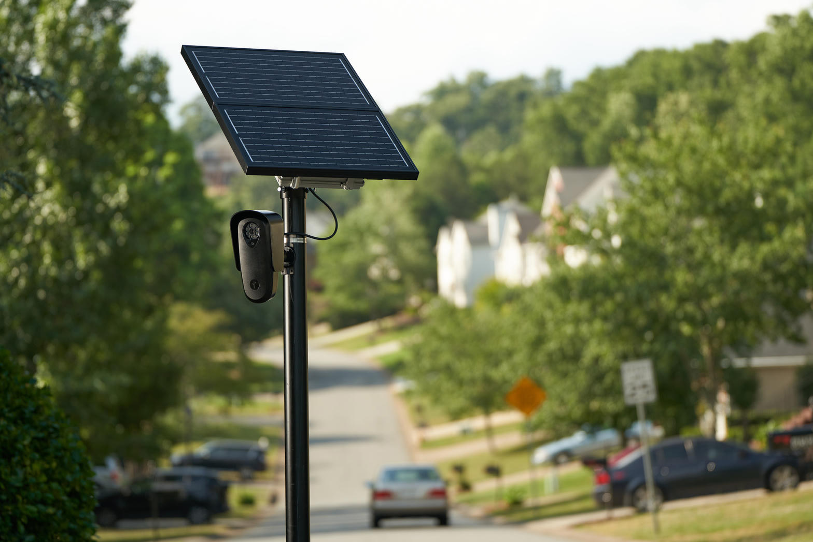
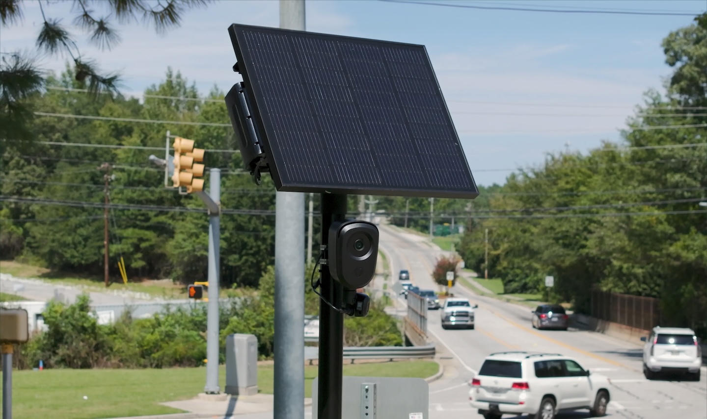
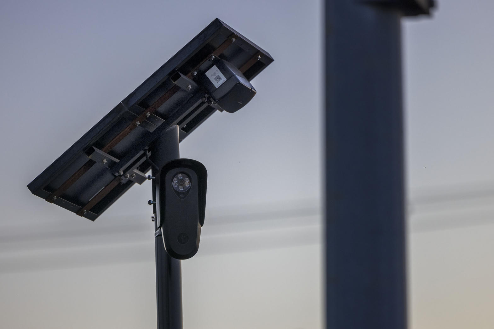

Someone posted a reel. Someone answered with derivatives. Someone else answered with fallacies. Then someone asked for a story that does not come out of a vendor deck.
This is that story. It is not a sermon for the cameras and it is not a hymn for the ACLU. It is what the public record actually holds when you refuse both brochures.
The first derivative is a plate
A fixed automated license plate reader photographs a plate, stores a time and a place, and hands a searchable string to whoever has a login. That is the first derivative. Position with respect to time. Who was on this road.
That first derivative has closed cases. Nobody serious denies that a hit can recover a stolen car or place a suspect vehicle on a corridor. The fight is not whether a camera ever helped an investigator. The fight is whether a citywide mesh of them changes the crime rate enough to justify a warrantless memory of the driving public.

What the papers actually say
In August 2026, University of South Carolina criminologists Scott Mourtgos and Ian Adams posted a working paper on CrimRxiv using FBI incident data and the staggered rollout of fixed ALPRs across 216 agencies. Headline: motor vehicle theft down about 11 percent after deployment, arrest clearance up about 16 percent. Other property crime in the same agencies did not fall the same way.
That is the best quasi-experimental paper on this exact product class right now. It is not peer-reviewed yet. It is not nothing.
The Institute for Justice read the same paper two weeks later and said the jury is still out. Their objection is not poetry. Treatment cities already had theft falling and clearances rising before the cameras went live, relative to controls. When you average agencies instead of concentrating on the highest-theft sites, the effect can vanish. Some high-theft adopters even saw theft rise after install. Pre-trends poison causal claims. That is not ACLU copy. That is a research shop that sues governments for a living, reading the same tables.
Older experiments were colder. Lum and colleagues, and the PERF Mesa hot-spot trial, did not find clean general crime drops from LPR patrols. An Atlantic City expansion study found mixed results tangled with a national crime decline. A University of Illinois look at Champaign case files found that vendor-style “solved” counts shrink hard when you ask which files produced charges. Forbes reported that a famous San Marino burglary-drop claim sat on a period when burglaries did not cooperate.
So the honest sentence is this. There is one recent staggered-adoption paper that finds an auto-theft reduction concentrated where theft was already bad. There is a serious critique that the pre-trends make the causal story leaky. There is a long earlier literature that is mixed to weak. Anyone who says “the cameras already made America safer, period” is selling. Anyone who says “they never catch anyone” is also selling.
Displacement is not a myth
Criminology has watched cameras move crime down the block for decades. A reader on Olive does not padlock a will. It can move a theft two lights east, or into a garage, or onto a plate that is already stolen. If your neighborhood got quieter and the next one got louder, you did not abolish the first derivative. You exported it.
The third, fourth, and fifth
Incarceration is a lagging indicator. A man booked in 2024 because a plate hit put him at the scene is still not on your street in 2026. That is a real third derivative. Time in custody is not a press conference. It is months that did not happen on La Sierra or Blackstone.
The fourth is rumor. People talk. Some thieves do change routes. Some stop using the family minivan. That is not “the future criminal’s soul has been rewritten by a solar panel.” That is ordinary deterrence plus ordinary displacement. Treating a speculative personality change as a law of motion is what logicians call begging the question. You assumed the thing you still have to measure.
The fifth derivative in the original comment was swagger. Calculus as a mood. If you have ever actually taken the fifth derivative of a messy social time series you know the noise eats the signal. Poverty, fentanyl, clearance culture, reporting rates, and a national post-2022 crime drop all sit in the same equation. A camera is one term. Slothful induction is refusing to update when the extra terms show up. Both tribes do it. The vendor tribe inducts from customer surveys. The civil-liberties tribe inducts from the worst abuse file and calls the mean zero.

Optics is not a pipe cutter
An ACLU motion is an appeal to a court and to an audience. Call that optics if you want. It is still not a rally to smash hardware. Conflating a lawsuit with vandalism is a straw man. The organization can be wrong about the size of the safety effect and still be right that a nationwide plate graph without a warrant is a Fourth Amendment problem. Both things can be on the table at once. Adults do that.
The other safety question in the original comment is real and should not be laughed off. People who treat cameras as legitimate targets have already committed a crime before any philosopher arrives. Encouraging destruction of city or contractor property is not civil liberties. It is a new victim and a new case file. If your theory of safety requires a felony to make the pole go away, you do not get to call the other side the only sloppy moralist in the room.
Insults do not integrate. Calling a legal shop a limp organization does not move a p-value. Neither does calling every skeptic a child who cannot do calculus. Ad hominem is what you reach for when the tables are mixed and you need the room to pick a team.
What a district can hold at the same time
A Tower District block can want stolen cars recovered and still want a log of who searched the database and why. It can notice that some agencies already had theft falling before the install date. It can notice that a hit still beats a cold case. It can refuse Flock’s marketing department as a source and still refuse the claim that removing the program un-arrests the people already booked.
Effects do not reverse like a light switch. Prison sentences do not reverse because a city council later covers a camera with a trash bag. Future deterrence can fade. Displacement can unwind. Root causes do not leave because a pole left. That last sentence is the part of the skeptical reply that survives contact with the data. A camera is not a school, a clinic, or a father. Removing it does not restore 2019. Leaving it does not invent 2019 either.
Closing
The funny part of the original thread is not the vulgarity. It is the certainty. Certainty is cheap on a reel. Independent work in 2026 still looks like this: a working paper with an 11 percent auto-theft association, a pre-trend warning, older null experiments, documented misuse and misreads, and a stack of cities canceling contracts over data sharing they did not authorize.
If you need a moral, take the smallest one that fits. Measure twice. Do not vandalize the instrument. Do not confuse a lawsuit with a riot. Do not confuse a vendor blog with a journal. And if you are going to talk derivatives, show the residuals.
Sources (not Flock marketing)
- Mourtgos, S. and Adams, I. “Automated License Plate Readers, Vehicle Theft, and Clearance.” CrimRxiv working paper, August 2026.
- Institute for Justice, “Do Flock cameras actually reduce crime? The jury is still out.” September 17, 2026.
- Manhattan Institute, “Automatic License Plate Readers: Benefits, Risks, and Sensible Regulation.” September 2026 (notes the same pre-trend).
- Lum, Merola, Willis, Cave. CEBCP / George Mason LPR evidence review. Randomized work did not show general crime reduction from LPR patrols.
- Taylor, Koper, Woods. Mesa hot-spot LPR experiment. Journal of Experimental Criminology.
- Atlantic City ALPR expansion evaluation, Journal of Crime and Justice / related 2025 paper: violent crime not reduced; some association with theft and property drops, hard to isolate from national trends.
- CNN, July 26, 2026, on limited studies and ACLU warrant concerns.
- New York Times, August 10, 2026, on dragnet suits and sparse independent efficacy work.
- TechTimes / city cancellation reporting, 2026, on unauthorized federal lookups and contract exits.
- Senate judiciary testimony, September 23, 2026, collecting camera-deterrence literature and Atlanta clearance notes.
Flock’s own August 2026 blog summarizing the Mourtgos-Adams paper exists. It was not used as a primary source here.